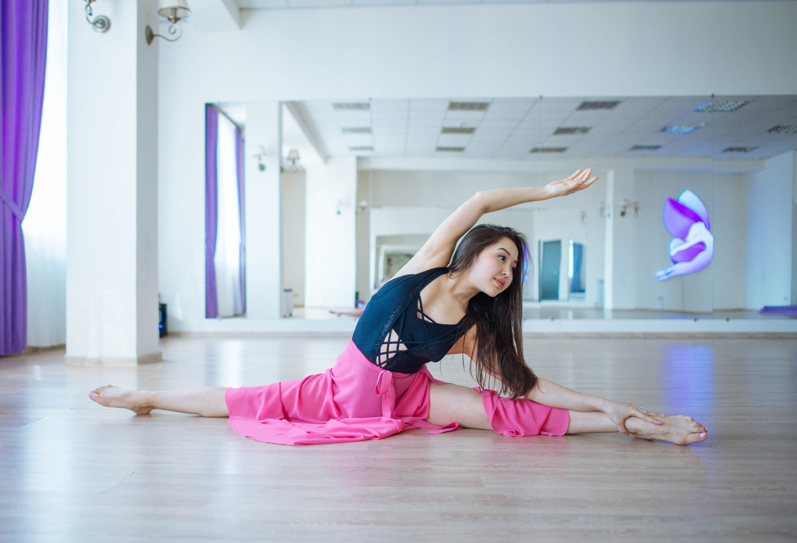
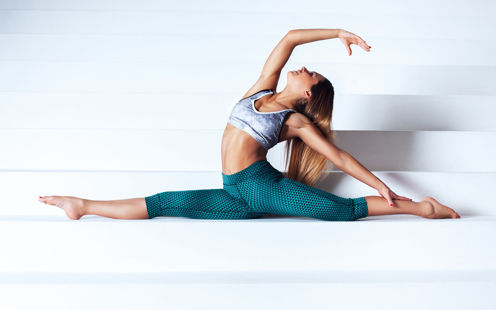
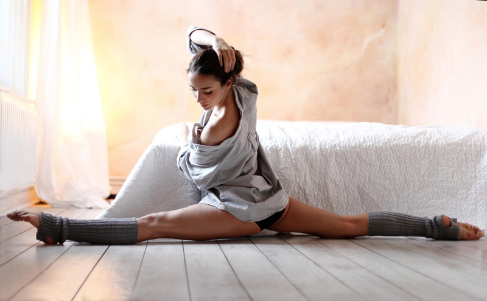
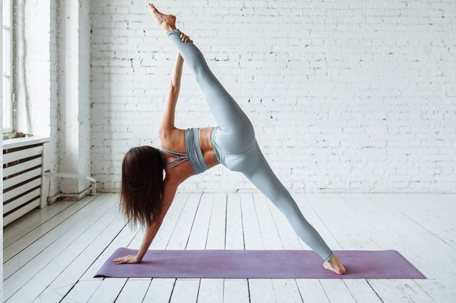
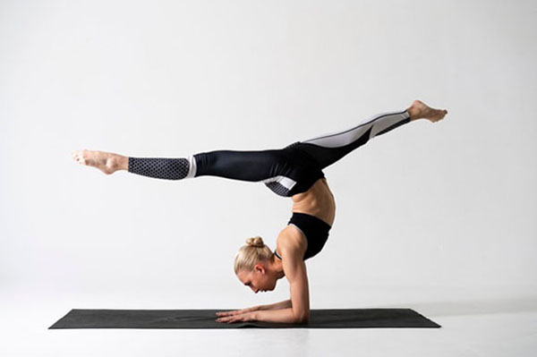
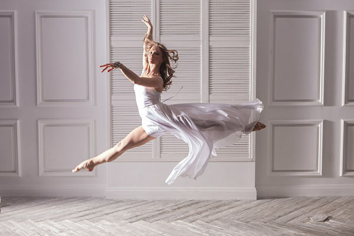

Мы в социальных сетях:


Для новичков и опытных спортсменов
Поперечным шпагатом называется такое положение тела, при котором ноги разведены в стороны при соблюдении всех правил, изложенных выше. Лягушки, кстати, делают это легко! Тем, кто вздыхает по поперечному шпагату, будет интересно, что многие врачи и тренеры утверждают, будто этот вид шпагата доступен далеко не всем. Около 13% человечества из-за своеобразного строения тазобедренного сустава никогда не сможет похвастаться выполнением этого упражнения на растяжку. Есть ещё одна несправедливость: поперечный шпагат намного легче дается мужчинам. Это связано с тем, что приводящие мышцы женского бедра развиты гораздо лучше, чем мужскогою 
Продольным шпагатом называется такое положение тела, при котором ноги разведены вперед и назад при соблюдении всех правил, изложенных выше. Природа не позволяет сесть на поперечный шпагат? И не надо! Даёшь продольный! Доступность этого упражнения на растяжку женщины словно противопоставляют поперечному шпагату у мужчин. Теперь уже сильный пол помучается при достижении заветной цели – ему будет мешать от природы мощная и не желающая расслабиться задняя поверхность бедра. Справедливости ради надо упомянуть, что в принципе на продольный шпагат сесть легче, чем на поперечный. Но… так же напомним, что продольных шпагата целых два: левосторонний и правосторонний. Различают их по ноге, которая находится впереди.
Горизонтальный шпагат мы получаем если укладываем поперечный или продольный шпагат вдоль линии горизонта.
Но если Вы решили разнообразить свою стрейчинговую жизнь и поднимаете к голове вытянутую рабочую ногу при стоящей на полу опорной, то в Вашей жизни случился вертикальный шпагат. Чтобы исполнить это упражнение, необходимо иметь не только отличную растяжку и с легкостью исполнять и продольный, и поперечный шпагаты на полу, но и достаточно сильные мышцы ног и спины.
Можно увидеть в гимнастике или в танцах (например, брэйк-дансе) ещё один вариант пространственной демонстрации растяжки – спортсмен встает в стойку на руки и демонстрирует шпагат,исполняемый на руках. Дух захватывает от восхищения, когда атлет, не выходя из этой стойки, исполняет попеременно шпагаты поперечный и продольный, ноги при этом своим движением напоминают лопасти вертолёта. Для исполнения этого упражнения необходимо обладать... всем. И даже немного большим, чем всё =).
А любители полета и балета могут вспомнить ещё и про шпагат в воздухе, который так, между делом исполняют гимнастки и балерины.
Мы в социальных сетях: